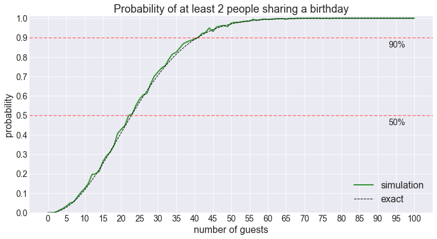
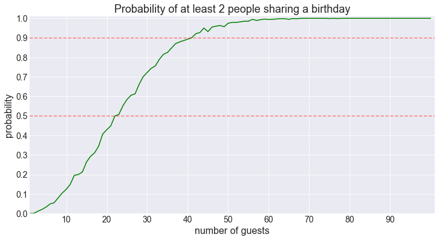

The Birthday Problem is a classic problem in probability theory. We will use it to illustrate how to use simulation to get an estimate of the probability of some event occuring.
Imagine that you are at a party with $N$ people (including yourself). Let's assume that we have 365 days in a year and that the birthday of the people attending the party is randomly distributed with a uniform distribution, meaning that each of the 365 days is equally probable as a birthday (if you were born on February 29, you'll need to go to another party).
How large does $N$ need to be for the probability of having at least 2 people share a birthday to be at least 50%? What about 90%?
(Note that this is different from asking for the probability of anyone sharing a birthday with a given person)
We can easily work out the edge cases. We know that if we have 1 person at the party, the probability of 2 or more people sharing a birthday is 0, and if we have 366 or more people, that probability will be 1 owing to the pigeonhole principle.
It also makes intuitive sense that the probability of shared birthdays increases monotonically as the number of guests increases, therefore, we know that we will reach the 50% threshold somewhere between 2 and 365 guests. Not a great guesstimate by any means, but nonetheless, it gives us a starting point.
This is the kind of problem that can be solved using probability theory, however, let's see if we can get to the answer using simulation.
Let's break the problem down into pieces.
from math import *
import numpy as np
# suppress warning messages.
import warnings
warnings.filterwarnings('ignore')
# import the scipy module which comtains scientific and stats functions.
import scipy as sp
import matplotlib.pyplot as plt
from matplotlib import cm
%matplotlib inline
# set the matplotlib style
plt.style.use("seaborn-darkgrid")
from IPython.core.display import display, HTML
display(HTML("<style>.container { width:100% !important; }</style>"))First, we define a numpy array called days that contains the day numbers for the year (1 to 365).
days = np.arange(1, 366)
daysarray([ 1, 2, 3, 4, 5, 6, 7, 8, 9, 10, 11, 12, 13,
14, 15, 16, 17, 18, 19, 20, 21, 22, 23, 24, 25, 26,
27, 28, 29, 30, 31, 32, 33, 34, 35, 36, 37, 38, 39,
40, 41, 42, 43, 44, 45, 46, 47, 48, 49, 50, 51, 52,
53, 54, 55, 56, 57, 58, 59, 60, 61, 62, 63, 64, 65,
66, 67, 68, 69, 70, 71, 72, 73, 74, 75, 76, 77, 78,
79, 80, 81, 82, 83, 84, 85, 86, 87, 88, 89, 90, 91,
92, 93, 94, 95, 96, 97, 98, 99, 100, 101, 102, 103, 104,
105, 106, 107, 108, 109, 110, 111, 112, 113, 114, 115, 116, 117,
118, 119, 120, 121, 122, 123, 124, 125, 126, 127, 128, 129, 130,
131, 132, 133, 134, 135, 136, 137, 138, 139, 140, 141, 142, 143,
144, 145, 146, 147, 148, 149, 150, 151, 152, 153, 154, 155, 156,
157, 158, 159, 160, 161, 162, 163, 164, 165, 166, 167, 168, 169,
170, 171, 172, 173, 174, 175, 176, 177, 178, 179, 180, 181, 182,
183, 184, 185, 186, 187, 188, 189, 190, 191, 192, 193, 194, 195,
196, 197, 198, 199, 200, 201, 202, 203, 204, 205, 206, 207, 208,
209, 210, 211, 212, 213, 214, 215, 216, 217, 218, 219, 220, 221,
222, 223, 224, 225, 226, 227, 228, 229, 230, 231, 232, 233, 234,
235, 236, 237, 238, 239, 240, 241, 242, 243, 244, 245, 246, 247,
248, 249, 250, 251, 252, 253, 254, 255, 256, 257, 258, 259, 260,
261, 262, 263, 264, 265, 266, 267, 268, 269, 270, 271, 272, 273,
274, 275, 276, 277, 278, 279, 280, 281, 282, 283, 284, 285, 286,
287, 288, 289, 290, 291, 292, 293, 294, 295, 296, 297, 298, 299,
300, 301, 302, 303, 304, 305, 306, 307, 308, 309, 310, 311, 312,
313, 314, 315, 316, 317, 318, 319, 320, 321, 322, 323, 324, 325,
326, 327, 328, 329, 330, 331, 332, 333, 334, 335, 336, 337, 338,
339, 340, 341, 342, 343, 344, 345, 346, 347, 348, 349, 350, 351,
352, 353, 354, 355, 356, 357, 358, 359, 360, 361, 362, 363, 364,
365])Assuming there are $N=50$ people at the party, let’s create an array guests_bday that will contain $N$ day numbers randomly drawn (with replacement) from the array days.
We’ll use the random seed 42 to ensure that ours results are reproducible.
N = 50
np.random.seed(42)
guests_bday = np.random.choice(days, N)
guests_bdayarray([103, 349, 271, 107, 72, 189, 21, 103, 122, 215, 331, 88, 100,
360, 152, 131, 150, 309, 258, 344, 294, 192, 277, 161, 314, 22,
253, 236, 345, 49, 59, 170, 188, 271, 190, 175, 51, 364, 55,
244, 320, 131, 307, 135, 21, 329, 167, 274, 89, 316])The number of unique birthdays in guests_bday is given by
num_unique = np.unique(guests_bday).size
num_unique46In this example, we have 46 unique birthdays for 50 guests.
Now that we know how to compute the number of unique birthdays for a particular sample of $N$ guests, let’s write a function shared_birthdays that takes integers $N$ and n_trials as parameters, and returns the proportion of trials where two or more people share a birthday.
def shared_birthdays(N, n_trials=1000, seed=42):
np.random.seed(seed)
return np.mean([np.unique(np.random.choice(days, size=N)).size < N for _ in range(n_trials)])Rather that manually changing the number of people at the party, let’s consider all possibilities between 0 and 100 at once (Hang on! A party with 0 people? “It happens”, the poor wretch replied, quickly looking away to wipe a tear with a désinvolture that belied his inner turmoil…).
number_of_people = range(101)sim = np.array([shared_birthdays(N) for N in number_of_people])We can now find the threshold above which we have a probability of shared birthday > 50%.
idx = np.where(sim > 0.5)[0][0]
number_of_people[idx]23According to our computation, if we have 23 or more people at the party, the probability of at least 2 people sharing a birthday is larger than 50%.
Similarly, to reach the 90% threshold…
idx = np.where(sim > 0.9)[0][0]
number_of_people[idx]41… we need at least 41 guests.
Let’s plot the result of the simulation
fig = plt.figure(figsize=(12, 6))
plt.plot(number_of_people, sim, 'g')
plt.axhline(y=0.5, c='r', alpha=0.5, linestyle='--')
plt.axhline(y=0.9, c='r', alpha=0.5, linestyle='--')
plt.xticks(number_of_people[::5], fontsize=14)
plt.yticks(np.arange(0, 1.05, 0.1), fontsize=14)
plt.ylim(0, 1.01)
plt.annotate("50%", xy = (93, 0.45), fontsize=14)
plt.annotate("90%", xy = (93, 0.85), fontsize=14)
plt.xlabel('number of guests', fontsize=16)
plt.ylabel('probability', fontsize=16)
plt.title('Probability of at least 2 people sharing a birthday', fontsize=18)
plt.show()So how can we check these results against the exact probability? When trying to determine the probability of a particular event occuring, it's often useful to consider the probability of the event __not__ occuring. Since these are two mutually exclusive events, their probabilities must sum to 1.
In our case, given N < 366 guests, the probability of no two guests sharing a birthday can be computed in the following way.
Assume that no two guests share a birthday. Let's consider a guest which we'll label as guest1. This guest will take one "birthday slot" out of 365. We then choose another guest, guest2, whose birthday must fall on one of the 364 unoccupied slots left. We then choose another guest, guest3, whose birthday must fall on one of the 363 unoccupied slots left. And on and on till we choose guestN whose birthday must fall on one of the (365-N+1) unoccupied slots left (recall that N < 366).
We can summarise this by saying that there are $$365\times364\times\cdots\times(365-N+1)=\frac{365!}{(365-N)!}$$ possible combinations of guests and birthdays that don't lead to a shared birthday.
Since, we're interested in (probabilities) proportions not number of configurations, we need to divide this number by the total number of birthday configurations for $N$ guests, which is just $365^N$ (each guest can have any birthday independently of the others). However, recall that this is the probability of no shared birthdays. To get the result we want we need to subtract this probability from 1. Hence, the exact (under the assumptions of the problem) probability of at least 2 people among $N$ guests sharing a birthday is:$$1 - \frac{365!}{365^N(365-N)!}$$
Let's compute this probability.
def exact_probability_shared_bday(N):
return 1 - factorial(365)/factorial(365-N)/365**N
exact = np.array([exact_probability_shared_bday(N) for N in number_of_people])
idx = np.where(exact > 0.5)[0][0]
print(f"We need {number_of_people[idx]} guests to reach the 50% threshold")
idx = np.where(exact > 0.9)[0][0]
print(f"We need {number_of_people[idx]} guests to reach the 90% threshold")We need 23 guests to reach the 50% threshold
We need 41 guests to reach the 90% thresholdWe get the same results as with the simulation!

Let’s plot the two results on the same graph.
fig = plt.figure(figsize=(12, 6))
plt.plot(number_of_people, sim, 'g', lw=2, alpha=0.8, label='simulation')
plt.plot(number_of_people, exact, 'k--', lw=1, label='exact')
plt.axhline(y=0.5, c='r', alpha=0.5, linestyle='--')
plt.axhline(y=0.9, c='r', alpha=0.5, linestyle='--')
plt.xticks(number_of_people[::5], fontsize=14)
plt.yticks(np.arange(0, 1.05, 0.1), fontsize=14)
plt.ylim(0, 1.01)
plt.annotate("50%", xy = (93, 0.45), fontsize=14)
plt.annotate("90%", xy = (93, 0.85), fontsize=14)
plt.xlabel('number of guests', fontsize=16)
plt.ylabel('probability', fontsize=16)
plt.title('Probability of at least 2 people sharing a birthday', fontsize=18)
plt.legend(loc=4, fontsize=16)
plt.show()
Can we generalise our simulation beyond pairs?
The first thing to notice is that our initial strategy isn’t going to work anymore.
np.unique(np.random.choice(days, size=N)).size < N basically checks whether we have more guests than unique birthdays. This is an easy way to check whether at least two guests share a birthday, but it will fail to produce the correct answer if we’re looking to find out know whether at least M guests share a birthay with M > 2.
Instead of looking at the difference between number of guests and number of unique birthdays, let’s count the number of unique birthdays directly. We can do that with numpy’s bincount function.
While we’re at it, we might as well look at variations of this problem, the probability that the maximum number of of people sharing a birthday is M, or the probability of having at most M people share a birthday.
First, let’s illustrate how bincount works.
np.random.seed(42)
a = np.random.randint(0, 10, 20)
aarray([6, 3, 7, 4, 6, 9, 2, 6, 7, 4, 3, 7, 7, 2, 5, 4, 1, 7, 5, 1])np.bincount(a)array([0, 2, 2, 2, 3, 2, 3, 5, 0, 1])This gives us the number of occurences of each value from 0 to 9 in a.
We can make things more explicit in the following way:
for value, count in zip(np.arange(a.max()+1), np.bincount(a)):
print(f"The value {value} appears {count} times in a.")The value 0 appears 0 times in a.
The value 1 appears 2 times in a.
The value 2 appears 2 times in a.
The value 3 appears 2 times in a.
The value 4 appears 3 times in a.
The value 5 appears 2 times in a.
The value 6 appears 3 times in a.
The value 7 appears 5 times in a.
The value 8 appears 0 times in a.
The value 9 appears 1 times in a.Let’s use bincount to count the largest number of people sharing a birthday in each of our trials.
def at_least_M_shared_birthdays(N, M=2, n_trials=1000, seed=42):
np.random.seed(seed)
return np.mean([np.bincount(np.random.choice(days, size=N)).max() >= M for _ in range(n_trials)])
def at_most_M_shared_birthdays(N, M=2, n_trials=1000, seed=42):
np.random.seed(seed)
# the only difference with the previous function is >= becomes <=
return np.mean([np.bincount(np.random.choice(days, size=N)).max() <= M for _ in range(n_trials)])
def a_maximum_of_M_shared_birthdays(N, M=2, n_trials=1000, seed=42):
np.random.seed(seed)
# the only difference with the first function is >= becomes ==
return np.mean([np.bincount(np.random.choice(days, size=N)).max() == M for _ in range(n_trials)])
# put the three functions in a dictionary to make it easier to choose between them later.
shared_bday = {}
shared_bday['at least'] = at_least_M_shared_birthdays
shared_bday['at most'] = at_most_M_shared_birthdays
shared_bday['a maximum of'] = a_maximum_of_M_shared_birthdaysWe create a utility function to run the simulation and plot the results.
Recall that M is the number of people sharing a birthday.
def plot_shared_birthday_prob(M=2, max_num_guests=100, how='at least'):
number_of_guests = np.arange(1, max_num_guests+1)
method = shared_bday[how]
sim = np.array([method(N, M=M) for N in number_of_guests])
# let's get the 0.5 and 0.9 thresholds if they are reached.
try:
threshold50 = number_of_guests[np.where(sim > 0.5)[0][0]]
except IndexError:
threshold50 = None
try:
threshold90 = number_of_guests[np.where(sim > 0.9)[0][0]]
except IndexError:
threshold90 = None
step = ceil(max_num_guests / 10)
fig = plt.figure(figsize=(12, 6))
plt.plot(number_of_guests, sim, 'g')
plt.axhline(y=0.5, c='r', alpha=0.5, linestyle='--')
plt.axhline(y=0.9, c='r', alpha=0.5, linestyle='--')
plt.xticks(np.array(number_of_guests)[::step]-1, fontsize=14)
plt.xlim(1, max_num_guests+1)
plt.yticks(np.arange(0, 1.05, 0.1), fontsize=14)
plt.ylim(0, 1.01)
plt.xlabel('number of guests', fontsize=16)
plt.ylabel('probability', fontsize=16)
plt.title(f'Probability of {how} {M} people sharing a birthday', fontsize=18)
if threshold50 is not None and how == "at least":
print(f"50% threshold for {M} shared birthdays reached for {threshold50} guests.")
if threshold90 is not None and how == "at least":
print(f"90% threshold for {M} shared birthdays reached for {threshold90} guests.")
return figAs a sanity check, let’s redo the computation for pairs (M=2).
fig = plot_shared_birthday_prob(M=2, max_num_guests=100)50% threshold for 2 shared birthdays reached for 23 guests.
90% threshold for 2 shared birthdays reached for 41 guests.
Looking good!
With this new code we can now ask a different question.
What is the probability that we have at most than 2 people sharing a birthday?
fig = plot_shared_birthday_prob(M=2, max_num_guests=100, how='at most')This is a monotonically decreasing function of the number of guests (aside from the random noise), which makes sense.
This isn’t the most interesting of results so we’ll skip it henceforth.
Let’s look at the probability of the maximum number of shared birthdays being 2.
fig = plot_shared_birthday_prob(M=2, max_num_guests=100, how='a maximum of')That’s interesting. The probability starts off like the probability of observing at least 2 people sharing a birthday, but it never reaches the 90% threshold. Instead, after around 45 or so guests the probability starts decreasing. This of course makes sense, as the number of guests increases, we reach a point where having more than 2 people share a birthday is no longer unlikely. When the guests number is larger than 87, the probability of having only singletons (unique birthdays) or pairs dips below 50%. Let’s keep this in mind…
What about trios?
fig = plot_shared_birthday_prob(M=3, max_num_guests=250)50% threshold for 3 shared birthdays reached for 87 guests.
90% threshold for 3 shared birthdays reached for 132 guests.Notice that the probability of having 3 or more people sharing a birthday reach the 50% mark for 87 guests.
This is the same value for which the probability of having no more than 2 people share a birthday drops below 50%.
This is not a coincidence as these two events are mutually exclusive. You can either have at most 2 people sharing a birthday ($M \leqslant 2$) or more than 2 people sharing a birthday ($M>2$ which is equivalent to $M \geqslant 3$ since we don’t usually chop up the guests into pieces).
What about having a maximum of 3 people share a birthday?
fig = plot_shared_birthday_prob(M=3, max_num_guests=250, how='a maximum of')Similarly to the pairs, the trios see their probability wane after about 130 guests, and it dips below 50% at about 188 guests. We can now guess what happens, as the number of guests reaches 188, the probability of having 4 or more people share a birthday is more likely than not. Which takes us to…
Quartets
fig = plot_shared_birthday_prob(M=4, max_num_guests=500)50% threshold for 4 shared birthdays reached for 188 guests.
90% threshold for 4 shared birthdays reached for 259 guests.fig = plot_shared_birthday_prob(M=4, max_num_guests=500, how='a maximum of')Once again we get that now familiar shape (notice that the shape becomes more symmetrical as M increases).
The decrease in probability heralds the arrival of…
Quintets
fig = plot_shared_birthday_prob(M=5, max_num_guests=500)50% threshold for 5 shared birthdays reached for 314 guests.
90% threshold for 5 shared birthdays reached for 413 guests.fig = plot_shared_birthday_prob(M=5, max_num_guests=1000, how='a maximum of')Sextets
(This is starting to take some time to run…)
fig = plot_shared_birthday_prob(M=6, max_num_guests=1000)50% threshold for 6 shared birthdays reached for 457 guests.
90% threshold for 6 shared birthdays reached for 586 guests.fig = plot_shared_birthday_prob(M=6, max_num_guests=1000, how='a maximum of')We are barely reaching the 50% threshold now.
And one last one for the road.
Septets
fig = plot_shared_birthday_prob(M=7, max_num_guests=1000)50% threshold for 7 shared birthdays reached for 616 guests.
90% threshold for 7 shared birthdays reached for 768 guests.fig = plot_shared_birthday_prob(M=7, max_num_guests=1000, how='a maximum of')It looks like were we to smoothen out this plot, the probability would never reach 50%.
There you have it!
Hopefully, this little exploration of the birthday problem illustrates how useful simulation can be. In the case of the generalised version of the problem beyond pairs, we were able to simulate the problem easily by making a small modification to our original code.
Perhaps one question remains. How can we be sure that our simulation gives a reasonable (however we want define it) approximation of the answer?
Well, for pairs we compared our code to the exact result. Can we do the same for M > 2?
It turns out that there exists an exact answer to this problem for the general case, however it is much more involved than our little derivation for M = 2.
For more information I’ll refer you to this paper by Fisher, Funk, and Sams.
We can nonetheless compare our simulation to the authors’ exact result for the 50% threshold for the values of M they used:
| M | 2 | 3 | 4 | 5 | 6 | 7 |
|----------------|----|----|-----|-----|-----------|
| exact | 23 | 88 | 187 | 313 | N/A | N/A |
| our simulation | 23 | 87 | 188 | 314 | 457 | 616 |We’re in the right ball park. We could probably improve our results a bit by using more than 1000 trials.
It might also be interesting to record the variance across the trials during our simulation.
This, as they say, will be left as an exercise for the reader, and the next time you’re at a birthday party, if there are more than 23 people present be sure to sing “Haaaaappy birthday to youse!“, the pairs, trios, quartets, etc… will be grateful (the person organising the birthday party, not so much, oddly enough. There’s no pleasing some people anyway).